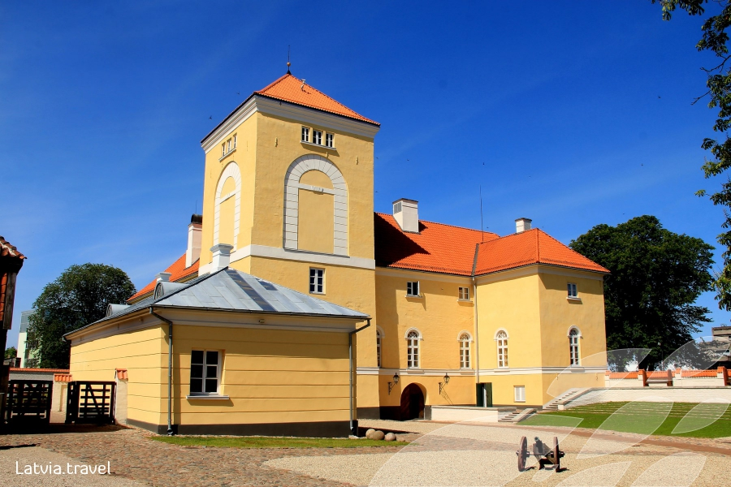
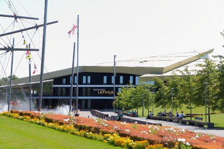
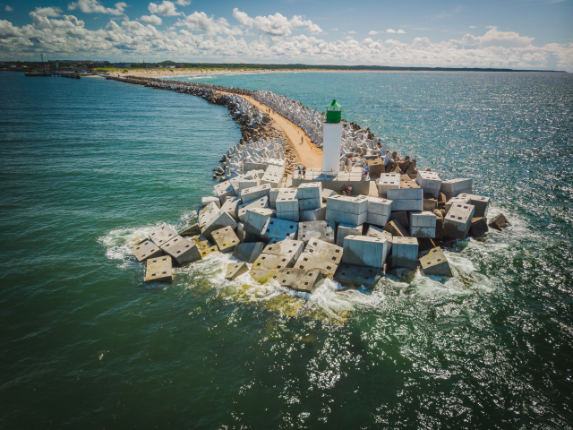

Ventspils is a city in northwestern Latvia in the historical Courland region of Latvia, and is the sixth
largest city in the country. At the beginning of 2020, Ventspils had a population of
33,906.
It is situated on the Venta River and the Baltic Sea, and has an ice-free port. The city's name
literally means "castle on the Venta", referring to the Livonian Order's castle built alongside the Venta
River.
For Ventspils, the wide stretch of dazzling white sand south of the Venta River is its main treasure. During the warmer months, beach bums of every ilk – from nudists to kiteboarders – line the pristine Blue Flag sands to absorb the sun’s rays. It's backed by a belt of dunes and a lush manicured park.
This blocky building doesn't look obviously castle-like from the outside, but the 13th-century interior is home to an entertaining interactive local history and art museum. During Soviet rule the castle was used as a prison, and an exhibit in the stables recounts its horrors.
A stunning architectural statement, this new concert and music hall hosts everything from pop to classical performances.
Extending out into the Baltic Sea, the Southern Promenade follows a breakwater with thrilling views of huge freighters passing close by. The walk is capped by a lighthouse and anchored by Ventspils beach.